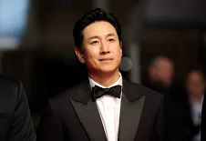
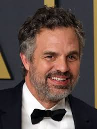
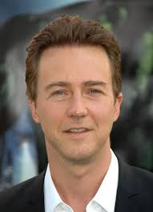
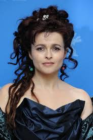
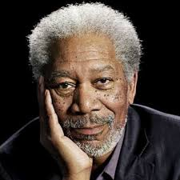
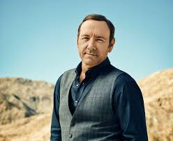

movies named in the list are :
- inception
- Parasite
- shutter island
- seven
- fight club
| Poster | Movie Name | Director | Publish Date | Genre |
|---|---|---|---|---|
|
Shutter Island | Martin Scorsese | 2010 | Thriller / Mystery |
|
Inception | Christopher Nolan | 2010 | Sci-Fi / Action |
|
Se7en | David Fincher | 1995 | Thriller / Crime |
|
Parasite | Bong Joon-ho | 2019 | Thriller / Drama |
|
Fight Club | David Fincher | 1999 | Drama |
inception
full information inception
Director & Writers : Christopher Nolan
Stars :
DiCaprio 
Tom Hardy
Cillian Murphy
SUMMARY : 'Inception' is lauded for its ambitious concept and Christopher Nolan's direction . The film's exploration of dreams and reality is a significant theme. Leonardo DiCaprio's performance is praised for its depth. Hans Zimmer's score and Wally Pfister's cinematography enhance the atmosphere. However, some find the plot convoluted and action sequences uninspired, questioning emotional depth and originality. The ambiguous ending is both appreciated and criticized. Overall, 'Inception' is seen as thought-provoking and visually stunning, despite its flaws.
PARASITE
full information PARASITE
Director : Bong Joon Ho
Writers : Bong Joon HoHan - Jin won
Stars :
Song Kang-ho
Lee Sun-kyun 
Cho Yeo-jeong
SUMMARY : Parasite, a 2019 South Korean black comedy thriller, depicts the stark contrast between two families:the wealthy Parks and the impoverished Kims. The Kim family infiltrates the Park household by cleverly posing as unrelated, highly qualified individuals to secure employment. This symbiotic relationship, initially beneficial to both families, eventually unravels, exposing the deep-seated class divisions and the inherent flaws within both the wealthy and the impoverished.
SHUTTER ISLAND
full information SHUTTER ISLAND
Director : Martin Scorsese
Writers : Laeta KalogridisDennis Lehane
Stars :
Leonardo DiCaprio
Emily Mortimer
Mark Ruffalo 
Summary : Reviewers say 'Shutter Island' is lauded for its suspenseful atmosphere, intricate plot, and standout performances by Leonardo DiCaprio and Ben Kingsley. The film delves into themes of guilt, grief, and reality. However, some find the plot convoluted and the twist predictable. Critics also note slow pacing and excessive length. Despite these issues, many praise Martin Scorsese's direction and the film's striking visual style.
FIGHT CLUB
full information FIGHT CLUB
DirectorDavid Fincher
WritersChuck Palahniuk
Stars :
Brad Pitt
Edward Norton 
Helena Carter 
Summary
Reviewers say 'Fight Club' is celebrated for its bold storytelling and cultural relevance, exploring identity, consumerism, and rebellion. Edward Norton and Brad Pitt's performances are highly praised, with Norton's troubled narrator and Pitt's enigmatic Tyler Durden standing out. David Fincher's direction is lauded for its visually striking and psychologically intense atmosphere. Despite mixed initial reception and critiques about glorifying violence, the film has achieved cult status, sparking debates and earning a place in cinematic history.
SEVEN
full information SEVEN
Director : David Fincher
Writer : Andrew Kevin Walker
Stars :
Morgan Freeman 
Kevin Spacey 
Brad Pitt
SUMMERY
Reviewers say 'Se7en' is a gripping, unsettling thriller. Praised for David Fincher's dark direction, strong performances by Morgan Freeman, Brad Pitt, and Kevin Spacey, and its complex plot. Its shocking ending and moral ambiguity are noted. Critics find it bleak and violent, with discomfort over graphic content. Despite this, it's recognized for its genre impact and deep reflection on morality